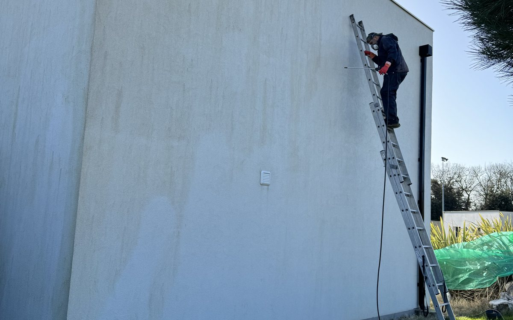
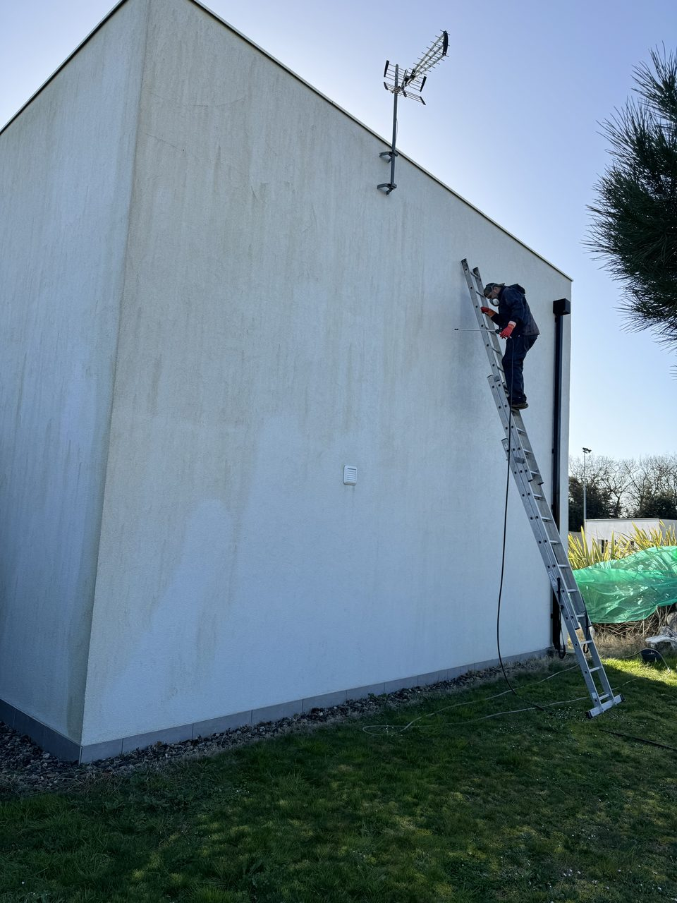

Accueil › Conseils › Nettoyage de façade à Toulouse
Façades
Nettoyage de façade : le prix au m² et la méthode qui convient à votre mur

Une façade ne noircit pas au hasard. Le mur nord se couvre de vert, le mur sud reste propre. Sous une gouttière percée, une coulée brune descend sur trois mètres. Ce ne sont pas des taches, ce sont des symptômes, et le bon traitement dépend de ce qui les provoque.
Voici les prix pratiqués selon les méthodes, comment choisir la vôtre, et une mise au point sur deux idées reçues qui coûtent cher : le karcher et le prétendu ravalement obligatoire tous les dix ans.
Pourquoi votre façade noircit
Trois causes, et elles ne se traitent pas pareil.
- Les micro-organismes. Mousses, algues vertes, lichens. Ils s'installent là où l'humidité reste : mur nord, façade ombragée par un arbre, bas de mur qui reçoit les rejaillissements. Un simple lavage les enlève en surface et laisse les spores dans le support, d'où le retour en six mois.
- La pollution. Les particules se déposent et se fixent avec la pluie. C'est le voile gris uniforme des façades en bord de route, très visible sur les enduits clairs.
- Un défaut de bâtiment. Gouttière fuyante, appui de fenêtre sans rejingot, remontée capillaire en pied de mur. Là, nettoyer ne sert à rien tant que la cause reste. La tache revient au même endroit, à l'identique.
Sur un mur, cherchez d'abord la forme de la salissure. Une coulée verticale nette part presque toujours d'un défaut d'évacuation. Un voile régulier, c'est la pollution. Des plaques diffuses côté ombre, ce sont les mousses.
Le prix au m² selon la méthode
Les fourchettes ci-dessous correspondent au marché français en 2026, main-d'œuvre comprise, sur une façade de maison accessible sans échafaudage lourd.
| Méthode | Prix au m² | Pour quel cas |
|---|---|---|
| Haute pression | 8 à 30 € | Béton, enduit dur et sain. Rapide, mais agressif. |
| Nébulisation | 15 à 40 € | L'eau ruisselle des heures et décolle sans abîmer. Supports fragiles. |
| Hydrogommage | 15 à 50 € | Pierre de taille, enduit à la chaux, bâti ancien. |
| Traitement biocide | 18 à 45 € | Mousses et lichens installés en profondeur. |
| Hydrofuge de protection | + 3 à 8 € | En complément, après nettoyage. Repousse le retour des mousses. |
Fourchettes relevées sur Travaux.com et Skyworkers, août 2026. Ordres de grandeur nationaux, pas un tarif d'entreprise.
Deux éléments font sauter ces fourchettes : la hauteur et l'accès. Une maison de plain-pied se traite à l'échelle. Un R+1 en limite de propriété impose un échafaudage ou une nacelle, et l'immobilisation du matériel pèse souvent plus lourd que le produit.
Quelle méthode pour quel support
La question n'est pas « quelle est la meilleure technique » mais « qu'est-ce que mon mur supporte ».
- Enduit monocouche récent, béton. Support dur, la haute pression modérée passe très bien.
- Crépi ancien, enduit taloché fatigué. Nébulisation ou traitement biocide. La couche de finition est mince, tout ce qui décape l'emporte avec la saleté.
- Brique foraine, pierre. Hydrogommage à basse pression. C'est le patrimoine toulousain typique, et c'est aussi le plus facile à abîmer définitivement.
- Façade peinte. Lavage doux uniquement. Toute technique abrasive vous condamne à repeindre derrière, et vous changez de budget.
Le karcher, fausse bonne idée
C'est le réflexe de tout le monde, et sur un crépi c'est une erreur qui se paye deux fois.
La lance à bout portant arrache le grain de finition en même temps que la mousse. Le résultat est spectaculaire le jour même : le mur est clair, net, propre. Six mois plus tard, la surface devenue rugueuse et poreuse retient l'eau, et les mousses reviennent plus vite qu'avant. Sur une pierre tendre ou un joint à la chaux, l'eau sous pression creuse carrément le joint et fait entrer l'humidité dans le mur.
Si vous tenez à le faire vous-même, gardez la lance à au moins 40 cm, travaillez en pression basse avec une buse à jet plat, et jamais de haut en bas contre le sens de recouvrement des matériaux.
Un mot sur la javel, tant qu'on y est. Elle décolore la mousse, ce qui donne l'illusion que ça marche. Elle ne détruit pas le système racinaire, elle attaque les joints au ciment, et elle finit dans les plantations au pied du mur. Un produit de traitement de façade coûte à peine plus cher et agit sur le fond.
L'hydrofuge, utile ou pas
Un hydrofuge s'applique sur façade propre et sèche. Il ferme la porosité à l'eau liquide tout en laissant passer la vapeur, ce qui permet au mur de continuer à sécher de l'intérieur. Bien posé, il repousse le retour des salissures de trois à cinq ans.
Il devient vraiment rentable sur une façade poreuse et peu ensoleillée, typiquement un mur nord sous les arbres. Sur une façade sud qui sèche en deux heures après la pluie, ou sur une peinture de façade récente déjà étanche, il n'apporte pas grand-chose. Un artisan qui vous le vend systématiquement sur les quatre murs surdimensionne le devis.

Nettoyage ou ravalement
La différence tient en une question : votre enduit est-il encore sain ?
Grattez discrètement un coin avec un ongle. S'il reste dur et cohérent, un nettoyage suffit et vous retrouverez la teinte d'origine. S'il s'effrite, sonne creux quand vous tapez, ou présente des fissures qui traversent, aucun nettoyage ne le sauvera. Il faut piquer, reprendre le support et refaire un enduit, ce qui n'a plus rien à voir en budget.
Un devis honnête vous le dit avant de commencer. Nettoyer un enduit mort, c'est facturer un travail qui sera à refaire l'année suivante.
« Le ravalement est obligatoire tous les 10 ans »
Cette phrase revient partout, et elle est fausse dans la majorité des cas.
L'article L126-2 du Code de la construction et de l'habitation prévoit bien un ravalement au moins tous les dix ans. Mais il s'applique à Paris et aux communes figurant sur une liste arrêtée par l'autorité administrative, et il se déclenche sur injonction du maire. Autrement dit : pas de liste, pas d'injonction, pas d'obligation automatique.
Dans l'agglomération toulousaine, la règle varie d'une commune à l'autre. Un appel au service urbanisme de votre mairie vous donne la réponse en deux minutes. Méfiez-vous du démarcheur qui agite l'obligation légale pour vous faire signer : c'est un argument de vente, pas un fait.
La bonne saison pour intervenir
Printemps ou début d'automne. Il faut plusieurs jours secs d'affilée, sans gel et sans canicule. En plein soleil d'août, un produit sèche avant d'avoir agi et laisse des traces. En dessous de 5 °C, les traitements ne prennent pas.
Autour de Toulouse, les fenêtres les plus confortables vont d'avril à juin, puis de mi-septembre à fin octobre. C'est aussi la période où les entreprises sont les plus demandées, donc prévoyez d'appeler un mois à l'avance.
Un chantier, avant et après
Cette maison de Pompertuzat avait un pignon exposé, couvert de coulées noires sur toute la hauteur. Traitement, rinçage doux, aucune reprise d'enduit : le crépi d'origine était sain, il ne demandait qu'à être nettoyé. Faites glisser le curseur.

 Avant
Après
Avant
Après
Nettoyage de façade & démoussage — Pompertuzat (31)
Questions fréquentes
Quel est le prix d'un nettoyage de façade au m² ?
Entre 8 et 50 € du m² selon la technique. La haute pression ouvre la fourchette, l'hydrogommage et le traitement biocide la ferment. Comptez 3 à 8 € de plus par m² si vous ajoutez un hydrofuge de protection.
Peut-on nettoyer une façade au karcher ?
Sur un béton ou un enduit dur et sain, oui, en gardant de la distance et une pression modérée. Sur un crépi ancien, une pierre tendre ou un enduit à la chaux, la haute pression arrache la finition. Le mur ressort plus clair sur le moment, puis se salit deux fois plus vite.
Le ravalement est-il obligatoire tous les 10 ans ?
Pas partout. L'obligation de l'article L126-2 vise Paris et les communes inscrites sur une liste administrative, et se déclenche sur injonction du maire. Hors de ces cas, rien ne vous y oblige. Vérifiez auprès de votre mairie.
Faut-il un hydrofuge après le nettoyage ?
Sur une façade poreuse exposée au nord ou à l'ombre, il retarde le retour des mousses de trois à cinq ans. Sur un mur plein sud qui sèche vite, ou sur une peinture de façade récente, il n'apporte rien.
Combien de temps ça tient ?
Trois à cinq ans avec un hydrofuge, deux à trois ans sans, sur une façade exposée. Si la salissure revient au même endroit en moins d'un an, cherchez la cause du côté du bâtiment : gouttière, appui de fenêtre, remontée d'humidité.
Intervenez-vous autour de Toulouse ?
Oui. Nous sommes basés à Tournefeuille et nous traitons des façades sur tout l'ouest toulousain, ainsi qu'à Préserville, Pompertuzat, Saint-Orens-de-Gameville et les communes voisines.
Sur le même sujet extérieur : le prix d'une terrasse en bois à Toulouse, avec le détail des essences et de la structure.